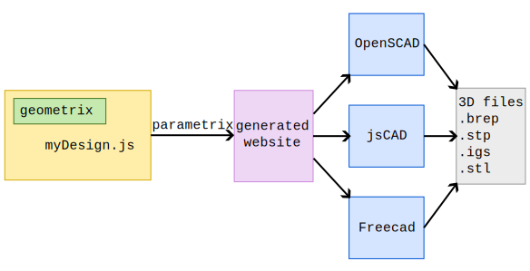
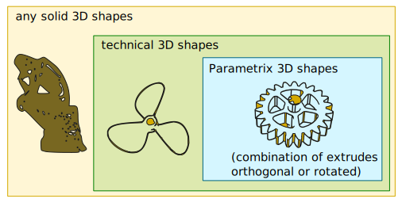
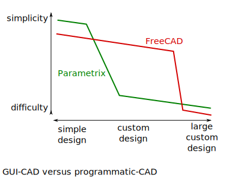
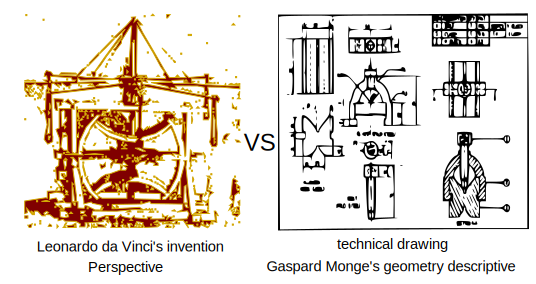
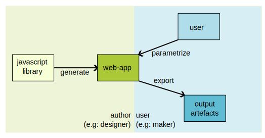

Parametrix concepts
Parametrix presentation
Parametrix is programmatic CAD tool. It provides an API (called geometrix) for modelling 2D shapes and 3D shapes. When you are done with your desing, Parametrix generates a web-UI for exposing your design.
Features
- Modern interface between designers and makers
- Automatic generation of CLI and UI
- Extendable for simulation (e.g. optics simulator) and design workbench (e.g. sheet metal)
- Optimized for G-code and common manufacturing process
- Built on top of several CAD tools (act also as unified API for the suported CAD tools)
- Simple deployment via npm
- Online and offline access
- Well integrated in git workflow (e.g. heliostat_model_50cm)
- Simple and powerful API for modelling including corner rounding feature
- The full power of Javacript for modelling your shapes
- Streamline core library of only 6000 lines of code easy to maintain
CAD Flow
Traditional CAD Flow
When you design your 3D-shape within a CAD tool, your work-product depends on this tool. If this tool becomes unavailable because technical, legal or commercial raison, you lose your work.
CAD Flow with Parametrix

The 3 main advantages of the parametrix flow:
- Parametrix helps keeping your work persistent because it is agnostic to any CAD solution. Your 3D-shape is described in Javascript with a dependency on the small library geometrix.
- The intermediate step of webui gives more autonomy to the maker. He can adjust sizings of the design himself without asking the designer.
- Having the 3D-shape described in Javascript helps providing high quality 3D-data and let you benefit from all the software developer tools including git for versioning and sharing.
Parametrix workflow

Designers and makers

Parametrix scope

More explanations
The user of Parametrix gets:
- 2D
- web app
- programmatic
- parametrizable
- simulation included
The programmer of Parametrix design (a.k.a. Designix) gets an API with:
- circle, stroke and arc
- corner widening or rounding
- export to DXF, SVG
- compatible with FreeCAD
- lines and arcs ready for CAM tools ;)

The API provides options for rounding or widening corners of outlines. It’s useful for:
- good looking parts
- manufacturabilty
- improve mechanical strength
Programmatic CAD
Instead of using graphical tools like FreeCAD, Programmatic CAD is the process of generating CAD designs from software code. Below some benefits of this approach:
- designs managed by software development tools like git
- lightweight. Typically you need a text-editor and a small viewer
- complex parametrization are better solved by software
- repeated pattern are easier to implement and maintained
- curve from complex mathematical formula
- can be integrated in web-backend or software automation chain
CAD flow comparsion
Low-tech CAD pros:
- less computer demanding
- scalability of established designs cons:
- restricted to subset of 3D shapes
- complex 2D programmatic design

The constraints of part manufacturing and low-tech CAD shaping concept are similar. As consequences:
- low-tech CAD is good enough for mechanical parts
- too restrictive for esthetic/design parts
Extruded-2D-design is good enough for 90% of technical parts

Parametrix versus traditional CAD tools
Pros of Parametrix
- Use standard software toold and flow
- branch and history provided by git
- very accurate modification tracking
- design-input via text-editor
- design shared through url/web-page
- extensive parametrization eases design re-use
- explicit list of parameters
- possibility to implement complex logic
- 2D drawings are free
- run in the browser (lightweight)
- can be scripted
Cons of Parametrix
- No straight method for managing assembly
- No export with dimensions
- 2D drawings are free and can contains bugs
- no direct 3D rendering
Shape description

In Parametrix, a 2D-figure is a collection of 2D-contours. A 2D-contour is a close-path made out of a straight strokes and arcs of circle. A 2D-contour might describe the outer shape or inner holes of the final part. Each 2D-figure describes the final part from a specific direction according to the technical drawing methodology. The 3D-shape is the recipe of how to extrude the 2D-figures and how to combine (boolean operations: union, intersection, substration) them to create the final part.
In Parametrix, a design is a 3D-shape. This 3D-shape is defined by a recipe and a collection of 2D-figures. Each 2D-figure consists of the following layers: main, second, dynamics, points, lines and vectors. Only the layer main is used in the final 3D-shape. The other layers are only helpers for debugging and simulation. The layers main, second and dynamics are collections of Contours. A Contour can be either a circle or a close-path. A close-path is made out of straight strokes and arcs-of-circle.
Future tools around Parametrix
Web app
web app characteristics
- [+] security
- [+] ubiquity
- [+] no installation
- [+] OS agnostic
- [+] browser agnostic (web standards)
- [-] no file access
- [+] could be installed locally for offline usage
- [+] fast development of GUI
- [-] restricted to web protocols
- [-] restricted hardware access
native app characteristics
- [+] performance
- [+] multi-threading
- [+] many programming languages
- [+] compiled or interpreted
- [+] run with internet-off
- [-] OS dependent
- [-] complex development of GUI
- [+] any network protocol
- [+] access to hardware
In 2023 the eco-system for developing web-apps is mature.
- nodejs V18 is the first LTS with official support for ESM.
- SvelteKit is the first frontend framework that support ESM.
Development
actors
repos and packages overview
npm-packages of parametrix
- geometrix
- designix
- geomui
- geomcli
- designix-cli
- designix-ui
- designix-uis
- paramui
- designix-script-js
- designix-script-ts
npm-packages of create-parametrix
- create-parametrix
Generalization of the design-webapp concept
The concept of Parametrix for generating webapp can be extended to other disciplines like:
- electronic
- digital-design/FPGA-design
- simple-software state-machine
- music

For each of those domains, an author creates designs in javascript. From there the framework generates a webapp. Finally the end-user parametrises a design and gets his customized instance of the design.
The authors generate many independant webapp for exposing there designs. 3 helper-apps could complete the offer:
- A search-engine for selecting/finding the wished design
- A visualizer for displaying a parametrized design
- An assembler for managing the parameters and the combination of several designs
A javascript design library can be distributed in several ways:
- as a website publised on internet
- as a local website, distributed via npm-packages
- as a local command-line-interface, distributed via npm-packages
- as npm-package being imported in other javascripts